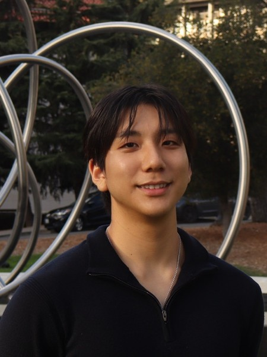

| 성명 | 최준호 (Junho Andrew Choi) | 이메일 | andrewc27@berkeley.edu |
|---|---|---|---|
| 거주지 | 미국 캘리포니아주 버클리 | 연락처 | 510-734-9646 |
| 희망 분야 | 데이터 사이언스 · 머신러닝 | 링크드인 | junho-choi |
| 기간 | 학교 / 전공 | 내용 |
|---|---|---|
| ~ 2027. 05 (졸업 예정) |
캘리포니아대학교 버클리 (UC Berkeley) 데이터 사이언스, 통합생물학 (B.A.) |
버클리 디자인 이노베이션 수료증 주요 이수: 머신러닝, 데이터 엔지니어링, 자료구조, 데이터 사이언스의 원리와 기법, 데이터 사이언스를 위한 확률, 최적화 모델링, 컴퓨터 프로그램의 구조와 해석, 다변수 미적분, 선형대수 및 미분방정식, 유기화학 |
| 기간 | 회사 / 직무 | 담당 업무 |
|---|---|---|
| 2026. 09 ~ 현재 | UCSF Abbasi Lab 학부 연구원 |
LLM 기반 EHR 요약 파이프라인 개발, 200만 건 이상 합성 임상 기록에 대한 검색 감사, 환각 측정·감소를 위한 주장 단위 근거 평가 체계 설계. |
| 2026. 05 ~ 08 | SmartMind AI 데이터 사이언티스트 (AI 엔지니어링팀) |
기업 ERP 대상 자연어-SQL 파이프라인 주도, 골든셋 기반 다회 측정 평가 설계, Neo4j 온톨로지(ApeRAG/Qurify) 감사로 누락·중복 노드 및 정답 키 오류 수정. |
| 2025. 05 ~ 08 | 서울아산병원 (AMC) AI 연구원 |
VLM3D 다중 이상 분류 챌린지 탐색적 분석으로 7위, PyTorch 3D U-Net·ResNet3D 및 간세포암 다중모달 생존 모델 개발, SHAP·Grad-CAM 검증. |
| 2025. 01 ~ 현재 | Invention Corps of Berkeley 사용자 리서치 & 디자인 컨설턴트 |
Mozilla Firefox: 12인 팀과 설문 설계·분석으로 50개 이상 탭을 추적하는 React·Vite 확장 프로그램 요구사항 도출. Braven: 설문 데이터로 4개 코호트 페르소나 도출, Figma 모바일 화면 6종 납품. Replate: 대규모 사용자 데이터 분석을 바탕으로 기부자와 회사가 함께 쓰는 웹사이트 대시보드 설계·구축. |
| 2024. 05 ~ 08 | 바이오솔루션 (Biosolution) 연구 인턴 |
PCR·FACS·HPLC 마이크로RNA 어세이 설계, 세포 배양 및 생체 내 실험, CAR-T 세포 치료 프로그램 지원. |
| 2022. 09 ~ 2024. 03 |
미 8군, 2사단 HHBN 부사관 · 소대장 |
이중언어(한·영) 소대장으로 40명 이상 소대 통솔, ACFT 교육 96% 합격률 달성. 미 육군 표창장 수상. |
| 프로그래밍 | Python, R, Java, SQL |
|---|---|
| ML / 데이터 사이언스 | PyTorch, Scikit-learn, NumPy, Pandas, SHAP, 탐색적 데이터 분석, 특징 공학, 모델 평가, 시각화 |
| 시스템 & 도구 | Git, React, Vite, Figma, Jupyter, Microsoft Office, Photoshop |
| 생물정보학 & 실험 | PCR, FACS 분석, HPLC, 세포 배양, 생체 내 실험 |
| 언어 | 한국어(모국어), 영어(유창), 중국어(중급) |
| 프로젝트 | 설명 |
|---|---|
| 멀티 에이전트 광고 생성 시스템 | 오디언스 데이터로 브랜드에 맞는 광고를 생성하는 8개 에이전트 LLM 파이프라인. 에이전트 간 버전 관리 JSON 명세로 통신하고, 브랜드 가디언 에이전트가 색상·레이아웃 규칙으로 거부권 행사. |
| AI 전술 어시스턴트 | PyTorch 신경망으로 경기 결과를 예측하고, PuLP 선형계획법 기반 제약 최적화로 팀 편성을 자동화해 6대6 축구 리그 우승. |
| 지리공간 경로 최적화 | 분기 한정 가지치기 DFS로 200개 이상 실제 좌표 간 최단 순회 경로 계산. |
| 심장질환 예측 모델 | UCI Cleveland 데이터셋 기반 엔드투엔드 분류 파이프라인, 재현율 우선으로 87.3% 정확도 달성. |
| 활성화 도메인 예측 파이프라인 | CNN–BiLSTM으로 단백질 활성화 도메인 10개 클래스 분류, 홀드아웃 F1 = 0.95, SHAP·K-평균으로 해석. |
| ~ 현재 | Cal Galacticos 주장 (UC 버클리 교내 경쟁 축구) — 버클리 최대 규모 한인 축구팀 운영, 신규 회원 모집·행사·SNS·팀 일정 관리. |
저는 데이터와 디자인, 그리고 생물학이 만나는 지점에서 문제를 풀 때 가장 몰입합니다. UC 버클리에서 데이터 사이언스와 통합생물학을 함께 공부하며, 서로 다른 분야의 언어를 잇는 일에 자연스럽게 끌렸습니다. 숫자로 드러나는 사실과 사람이 실제로 느끼는 경험 사이의 간극을 좁히는 것 — 그것이 제가 기술을 배우는 이유입니다.
서울아산병원 AI 연구원으로서 3D 의료 영상 전처리 파이프라인을 구축하고 SHAP·Grad-CAM으로 모델의 판단을 임상의가 이해할 수 있도록 시각화했습니다. 다기관 분류 챌린지에서는 특징 선택과 팀 전략에 기여해 7위를 기록했습니다. Mozilla Firefox 프로젝트에서는 사용자 조사부터 React·Figma 구현까지 제품의 전 과정을 경험하며, 기술과 사용자 사이를 잇는 감각을 길렀습니다.
저의 강점은 여러 분야를 잇는 연결력과 끝까지 다듬는 집요함입니다. 코드, 데이터, 디자인을 넘나들며 늘 배우고 만들고 개선해 왔고, 제가 만든 결과물이 기술적으로 흥미로운 데 그치지 않고 누군가에게 실제로 도움이 되기를 바랍니다. 앞으로도 데이터로 창의적인 결정을 이끌고, 디자인으로 기술을 인간적으로 만드는 사람으로 성장하겠습니다.